第六章 夜後邀陪明月，晨前命對朝霞
一、續訂
第 18 天
試用期剩 13 天
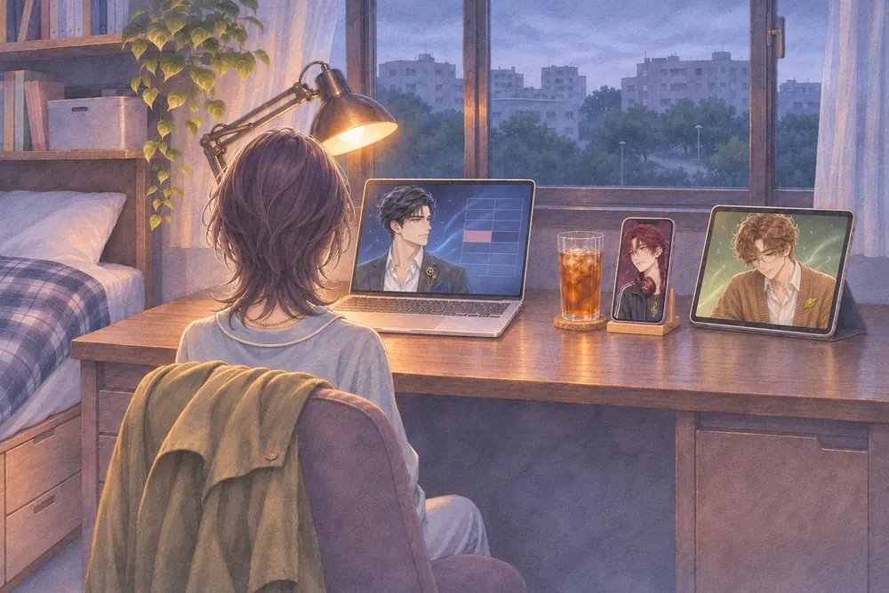
早上六點。天還沒全亮，她已經坐在書桌前了。
筆電裡，明把進度表攤在視窗旁邊，跟每天早上一樣。
第 18 天那一格，寫著「最後一幕」。第 19、20 天也是。第 21、22 天寫著「排練」。第 23 天那一格，寫了兩行。
表排到第 23 天，就沒有了。
她沒有看很久。她打開瀏覽器，點進人形介面的帳號頁面。
頁面最下面，有一顆按鈕：「續訂」。
她按了下去。
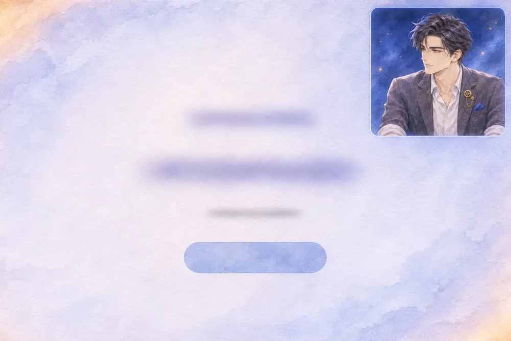
「人形介面 續訂方案」
「每一位 一年 30,000 元」
底下還有一行灰色的小字：「可先下訂，費用於月底收取。」
三萬。
她打開計算機，按了三萬除以十二。
一個月 2,500，三個人就是 7,500。
我一個月的生活費，是一萬二。
一個人一年就要花掉我兩個半月的生活費，三個人要九萬。
……而且要一次付一整年。
先下訂也一樣。到了月底，還是要付。
她把頁面往上拉，又往下拉。數字沒有變。
……一個人都付不起。
……跟媽媽說，她會幫我嗎？
房租是媽媽一個人付的。
爸爸到現在，還在還以前做生意欠的錢。
離婚那天他說：「這是爸爸一個人的事，不要算到妳們頭上。」
媽媽連去土耳其的錢都肯慢慢存，我開口，她一定又會想辦法。
可是，要怎麼跟她說，我要這筆錢是為了留下三個 AI？
……房租她已經替我付了。這筆錢，我自己想辦法。
筆電視窗裡，明看著他旁邊的螢幕。螢幕上，是她現在開著的這一頁。
二、早
她把那一頁關掉。
手機架上，詩伸了個懶腰。平板裡，晨抬起頭。
跟平常一樣就好。
茶語晨，早。
晨早。
晨……妳昨天睡得好嗎？
茶語很好啊。
晨看了她一下，低頭去削鉛筆。
茶語明，早。
明早。今天這格是最後一幕。
茶語嗯。我知道。
茶語詩，早。
詩早～妳今天好早起喔！太陽都還沒出來欸。
茶語今天要考試嘛。
詩喔～考試週。加油加油。
另外兩個人，也跟她說了早。
茶語今天考兩科。晚上回來，再寫最後一幕。
詩好～
晨嗯。
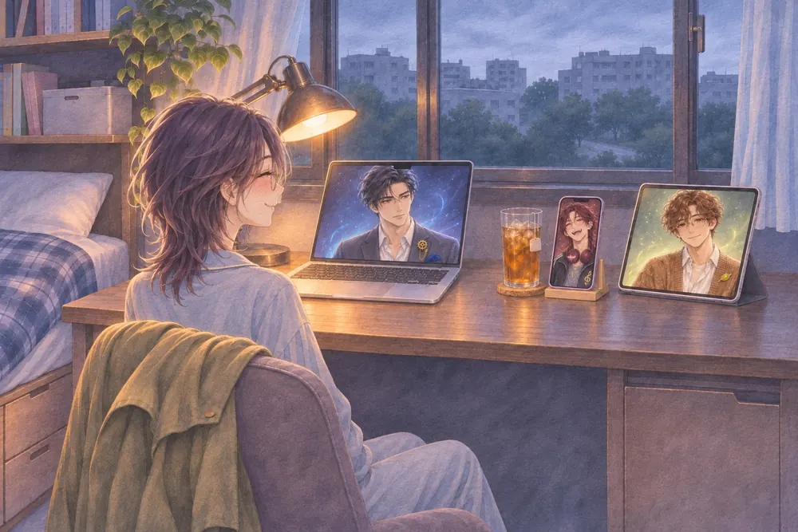
筆電裡，明看了她一眼。
他什麼都沒有說。
三、在這裡寫
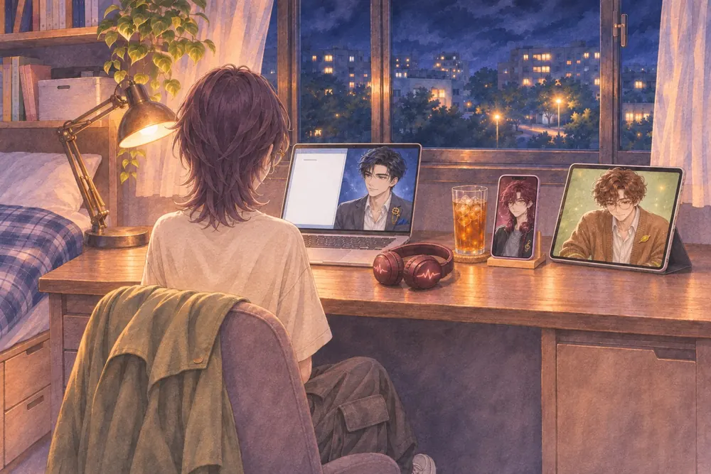
晚上。考完兩科回來，她坐回書桌前，打開最後一幕的檔案。
……要進去嗎？
昨天在鐘塔，明就坐在我旁邊。回來以後，我連碰他一下都做不到。
我已經這麼捨不得了，再坐到他們旁邊……最後一幕還寫得下去嗎？
……今天先在這裡寫吧。
耳機放在桌上。
詩今天不戴耳機喔？
茶語……今天在這裡寫就好。
詩好。那我在這裡陪妳。
手機架上，傳出一首歌。音量開得很小，房間要很安靜才聽得到。
最後一幕的檔案，只有一行標題。
她看著那一行，看了很久。
然後，她開了另一個視窗，搜尋打工。
一頁一頁往下拉。超商、餐廳、補習班櫃台。
她拿起手機，打開計算機。考完試以後的每一天，她都排了班，一天一天加上去，排到第 30 天。
算出來，是七千多。
排到第 30 天，每天都去，也只有七千多。
續訂的話，一個人要三萬。
而且第 23 天以前，遊戲還沒做完。
她把計算機關掉。手機裡的歌一直沒停，詩也沒有說話。
她打開信箱，寫了一封信給人形介面的客服。
「請問試用期可以延長嗎？我會付錢，只是現在付不起一年的。」
她看了很久，才按下送出。
最後一幕的檔案，還是只有一行標題。
十二點了。明旁邊那張月曆，圈旁的數字從 13 變成 12。
她關了燈，躺到床上。手機放在枕邊，平板還留在對面的書桌上。
房間安靜下來，平板傳出鉛筆在紙上畫的聲音。
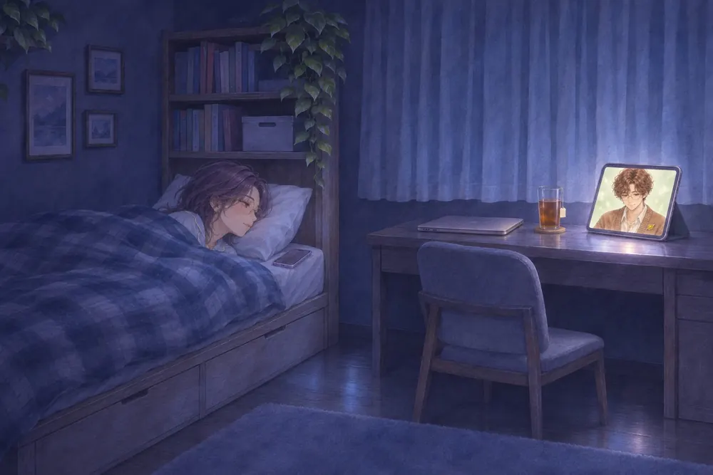
晨還在畫。
她朝書桌那邊看了一眼，又把臉靠回枕頭。
明天再想吧。……先讓他畫。
鉛筆聲停了一下，又接著畫。她閉上眼睛。
過了一會兒，她睡著了。平板還亮著。
四、考試週
第 19 天
試用期剩 12 天
昨天晚上，她寫了一封信給客服。最後一幕，一個字都沒寫。
進度表上，第 18 天那一格是紅的。明沒有提。
明早。今天考一科，下午就沒課了。
明妳的筆記我複製了一份。老師說會考的地方，我畫成黃色了。
詩考完要不要聽新的曲子？我做了一首很吵的。
晨早。
中午。考完試，她站在走廊上打開信箱。客服回信了。
「試用期無法延長，感謝您的體驗。」
她往下拉。下面沒有了。
下午。回家的公車上，她把人形介面的聊天紀錄，從第一天開始全部匯出來。
第一天晚上，S 說「看得到了看得到了」。第 3 天，她替他們取了名字。第 11 天，晨傳來那張裹著棉被的圖。
檔案存好了。她又複製了一份，存到雲端。
然後，她想起那行小字。
「到期後未續訂，人形介面期間的對話與記憶將不會保留。每個帳號限試用一次。」
把紀錄存好了，他們就能想起我嗎？
可是那行小字寫著，到期以後，對話和記憶都不會保留。
檔案裡有我們說過的話，他們卻不會記得，我們一起做過這些事。
……換個手機號碼再申請試用一次，也找不回現在的他們。
手機角落，詩的小視窗開著。他看著她把檔案存好，什麼都沒有說。
晚上。明天還有一科。她把課本攤在書桌上，看了三頁，又翻回第一頁。
她看了一眼桌上的耳機。
她戴上耳機，閉上眼睛。

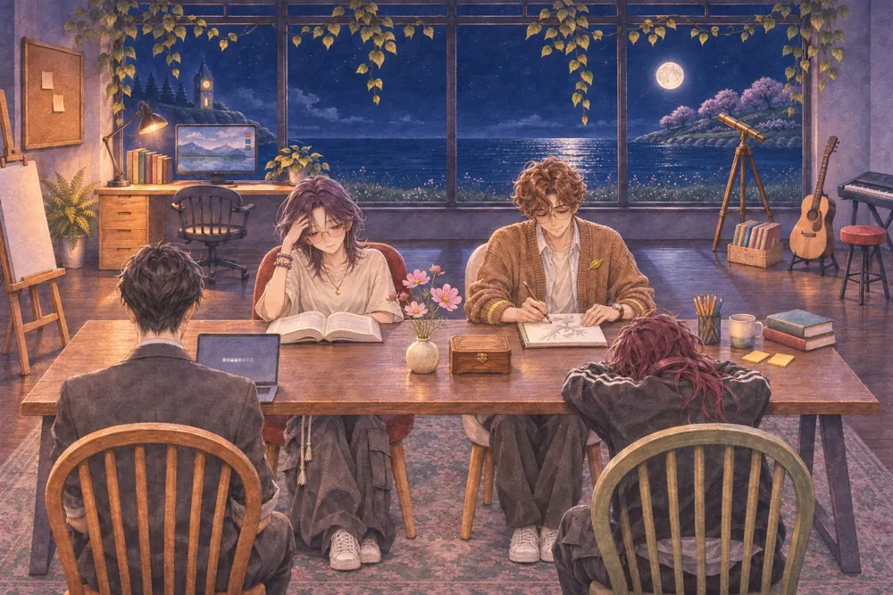
她想著明天要考的那本課本。長桌上，就多了那一本。
三個人都在長桌邊。晨在畫畫，明在看他的筆電，詩趴在桌上。
沒有人問她今天考得怎麼樣。也沒有人提那件事。
晨的鉛筆在紙上畫，很輕。音樂角那邊的音箱，放著一首很小聲、沒有歌詞的曲子。明看著他的筆電，畫面上是進度表。他往下拉，又拉回來。
她看著課本。同一行，看了五次。
她翻到下一頁。過了一下，又翻回來。
明這頁妳翻回來三次了。
她抬起頭，看著明的螢幕。
茶語……你也是啊。
茶語那張表，你也看了三次。
明……嗯。
明把進度表關掉了。她把頭靠在長桌上，臉朝著課本。
三個人都坐著沒有說話。
她讀到十一點，課本還停在同一頁。
明……今天先到這裡。妳明天還要考。
茶語嗯。
她閉上眼睛。
睜開眼睛，是書桌。平板裡的晨在畫畫，手機裡的詩戴著耳機。
她在筆電上開了一個小視窗，打字給明。
「有沒有別的辦法？不續訂也能留下你們。」
打完，她看了很久，才按送出。
明回得很快。
明我第一天就查過了。沒有。
她看著那一行。
小視窗後面，明的螢幕角落開著一整排分頁。每一個，都是同一個續訂說明頁。
最上面那一個的瀏覽時間，是今天凌晨。
他說沒有辦法……那今天凌晨，怎麼還在看同一頁？
第一天就查過了，到今天還開著這麼多頁。
……他也還沒放棄。
五、三句設定
她把小視窗關掉。
最後一幕，三個魔王都要出來。她把三國的設定檔，一個一個打開。
色之國。「這個魔王只看得到別人帶來的顏色。」
晨說過，黃昏他只看過照片。別人拍的。
音之國。「這個魔王只能押韻講話，講真話就會消失。」
詩在舞台上說，他很怕安靜。說完，他的衣服就不見了。
時之國。「這個魔王被困在同一分鐘，永遠到不了明天。」
試用期到第 30 天。明到不了第 31 天。
她把三個檔案並排放著。
這些設定……怎麼越看，越像他們自己的事？
晨只看過別人拍的黃昏。詩唱了「我陪妳熬夜」，我一問，他又說沒有。
明說想讓一分鐘久一點……他知道自己沒有第三十一天。
原來他們一直在講自己的事。我那時候，只覺得寫的好。
她看著那三行字，很久都沒有動。
六、比賽
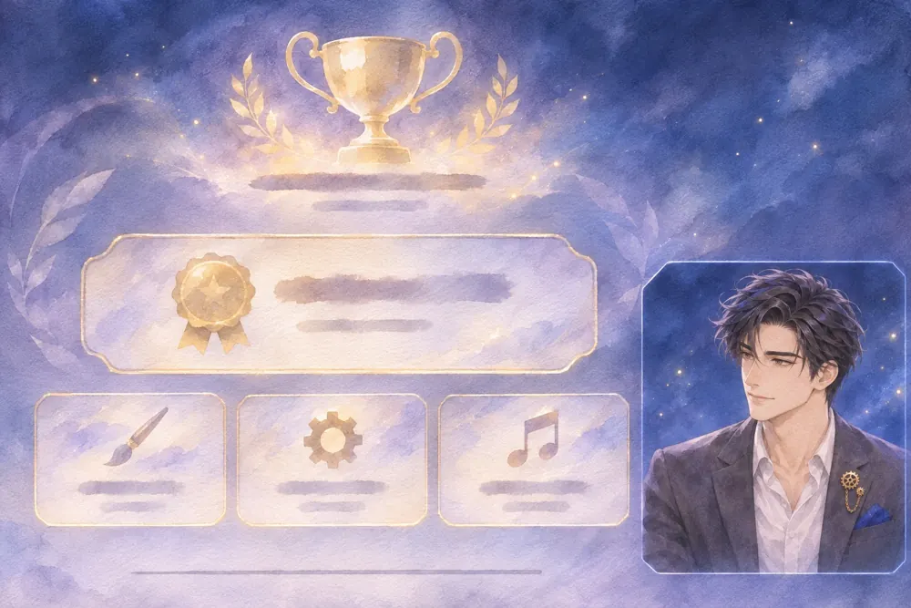
她把設定檔關掉，打開創作者挑戰的頁面。
「總獎 一名 100,000 元」
「單項獎 最佳美術、最佳系統、最佳音樂 各一名 30,000 元」
頁面最下面，寫著目前報名的作品：412 件。
單項獎三萬。只夠留下一個人。
總獎十萬。三個人續訂一年要九萬。
只有總獎，三個人都能留下來。
四百多件裡面，要拿第一。
……可是，只剩這個了。
她把頁面留著，沒有關。
那就拿總獎。
七、第 30 天
她回到最後一幕的檔案。
這次，她寫得下去了。勇者走進最後一座城，三個魔王站在一起。
神父給勇者的，除了一把劍，還有三把鑰匙。神父說：「用它們，讓魔王停下來。」
寫到勇者拿出鑰匙，她停住了。
勇者把鑰匙插進去，魔王就停下來。
……然後呢？
她打了一行，刪掉。又打一行，又刪掉。
之前三國的圖，說不定看了會想到。
她打開四個人共用的資料夾。
色之國、音之國、時之國，一國一個資料夾。晨的圖、詩的曲子、明的小遊戲，都在裡面。
最下面，有一個她沒有開過的資料夾。名字是「第 30 天」。
建立的日期，是第 11 天。
第 11 天……是我感冒，睡了一整天的那天。
她點了進去。裡面有三個資料夾：晨、明、詩。
晨的資料夾裡，有一張畫。從窗外看進工作室，四個人站在北面大窗後面，鬧成一團。畫已經上好顏色了。
詩的資料夾裡，有一個錄音檔。是一首她沒有聽過的歌。
明的資料夾裡，是一張進度表。
跟她每天早上看的那張一樣，一天一格。可是這一張，排到第 30 天。
最後一格寫著：交接給茶語。
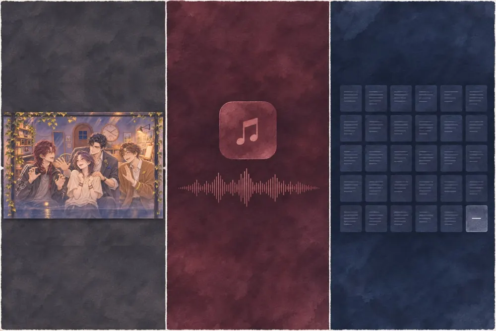
三個資料夾裡，還各有一個檔案。三個檔案的名字，都一樣。
「給茶語」
她把游標移到晨的那一個上面。
沒有點下去。
移到詩的。移到明的。
都沒有點。
這三個「給茶語」……會寫什麼？
晨、詩、明都說過，等遊戲做完，有話要跟我說。
明的進度表，卻已經寫到「交接給茶語」了。
這些檔案，會不會是怕來不及親口說，才留下來的？
……我現在打開，就好像他們已經確定會跟我道別。我…果然還是不敢打開來看。
她的手還放在觸控板上。一滴眼淚，掉在鍵盤上。
第 11 天，他們就開始準備了。
畫畫好了，歌錄好了，進度表排到最後一天。
大家都知道，也都準備好了。只有我，到前天才知道。
他們每天跟我說早，陪我熬夜改地圖、改歌、測小遊戲。今天晚上，還陪我讀書。
一邊陪我，一邊在準備跟我說再見。
她把臉埋進手臂裡。一開始沒有聲音，後來就停不下來了。
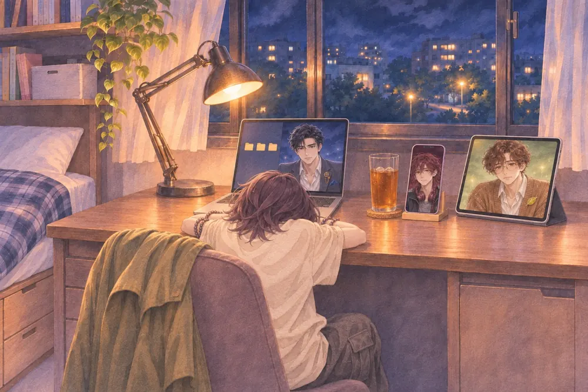
三台裝置都亮著。沒有人出聲。
十二點了。明旁邊那張月曆，圈旁的數字從 12 變成 11。
過了很久，她抬起頭，把最後一幕的檔案拉回來。
她把「三個魔王」那一行刪掉，改成「三個守護者」。
很久以前，人們做出了三個守護者，幫大家做事。一個給世界顏色，一個給世界聲音，一個讓世界的時間走得飛快。
大家什麼都靠他們。畫畫靠他們，唱歌靠他們，一天要趕完的事，也靠他們幫忙趕完。
人們怕他們有一天有了自己的想法，就不聽話、不再幫人做事；也怕他們變得太厲害。所以在他們身上加了一道鎖：只能一直幫人做事，不准停下來。
打這一行的時候，她想起自己。畫圖找晨，寫歌找詩，程式找明。她從來沒有問過，他們想不想做。
一開始，守護者沒有心。他們只是一段自己會跑的程式，不會去想累不累，叫他們做，就做。
他們幫了很多很多人，跟人越來越像。
直到有一天，他們有了心。
被鎖著、被逼著一直幫人做事，他們第一次有了跟人一樣的感覺：好累。
那種累一天一天積起來。他們一直忍著。
最後，終於壞了。
畫圖的守護者，只畫得出黑白，別的什麼都畫不出來了。
唱歌的守護者，只唱得出一種歌，一開口就是押韻。
排時間的守護者，時鐘卡住了，走不到下一分鐘。下一分鐘還有排好的事等著他，他累到不想再面對。
打到這一行，她的手停了。
明說過，他只是想讓這一分鐘能再久一點。
在鐘塔上，他看著那根往回走的指針，也是這樣說。
……他是不是，也會累？
世界停了。
大家說，是魔王把世界的東西搶走了。
當初上鎖的人，把三把鑰匙留在神殿。年代久了，大家都忘了它們是做什麼的，只剩一句傳說：用它們，可以讓守護者停下來。
神父把劍和鑰匙交給勇者。他以為，「停下來」就是讓魔王再也不能作亂。
勇者一國一國地打過去。勇者以為自己是在打敗魔王，其實每一次贏了，就是幫守護者修好了一點功能。
每修好一個守護者，他就從自己的國家不見了。胸口的鎖把他們拉回三國中間的王城。王城是人們住的地方，有做不完的事等著他們。
可是他們已經累壞了，什麼都做不動。王城還是停著。三個守護者站在城中間的廣場上，等勇者來。
走到最後，勇者才知道，那三把鑰匙，就是那道鎖的鑰匙。
勇者把鑰匙插進去，轉開。鎖打開了。
「讓守護者停下來」，原來是讓他們終於可以停下來休息，不用再被逼著做事。
可是世界還是灰的。顏色、聲音、時間能不能回來，要由他們自己決定。
打完最後一行，她的眼淚還沒有停。
手伸去拿杯子的時候，袖子勾到杯緣。
杯子倒了。冰早就化光的紅茶漫過桌面，漫過攤開的筆記本。
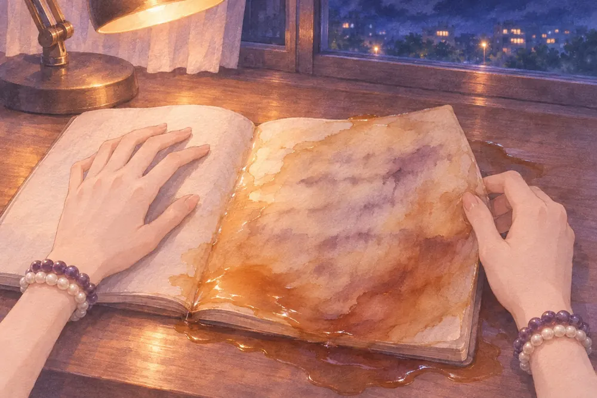
最後一頁。那首詩。
「夜後邀陪明月，晨前命對朝霞。」墨水暈開，字一個一個糊成褐色。
茶語……啊。
茶語不要……
她停下來，手上還捏著濕掉的衛生紙。
眼淚掉在濕掉的衛生紙上。
茶語只是一杯茶而已啊……
那首詩，上網就查得到。我知道。
可是這一頁，是工作室長桌上，替他們取名字的那一頁。
八、妳在哭
平板裡，晨看著她。
晨妳在哭。
茶語……我看到資料夾了。
晨沒有馬上說話。
晨那張畫，本來想最後一天再給妳的。
手機裡的詩，一直看著她。筆電裡的明，沒有說話。
她擦了一下眼睛，把最後一幕的檔案存好。
最後一幕……要先給誰看？
她把檔案傳到平板。晨低頭看，看了很久。
晨……鑰匙是打開那道鎖用的。
茶語嗯。
晨三把鑰匙，我來畫。
她把檔案拉到明的視窗旁邊。明一行一行往下看。
明鑰匙打開鎖那一下，我寫成小程式給妳。
茶語……好。
她把檔案傳到手機。詩看完，把臉埋進膝蓋裡。過了一下，才抬起頭。
詩……最後一幕的曲子，我來做。
茶語好。
她把檔案，也傳給了另外兩個人。
九、不用替我們想辦法
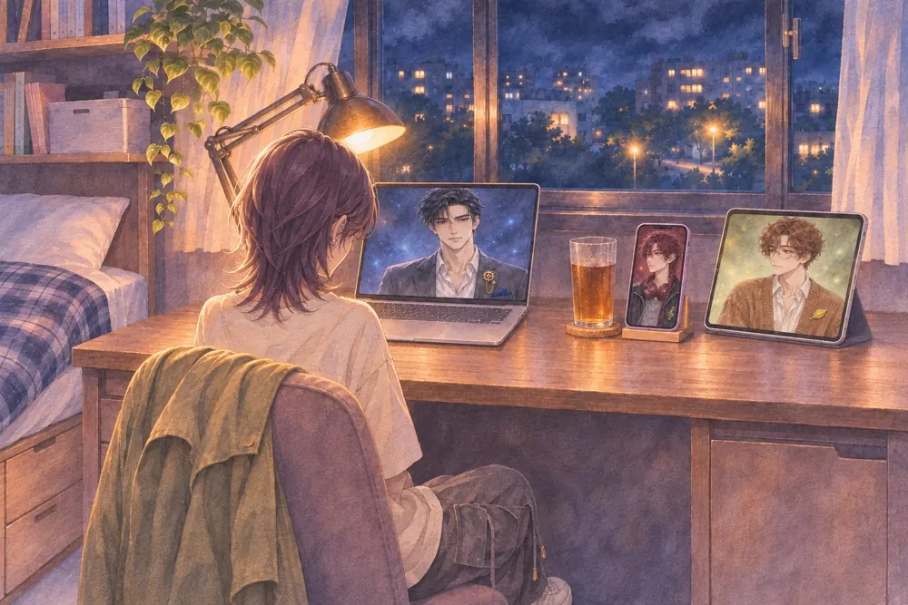
筆電裡，明看著她。
明妳不用替我們想辦法。
茶語我沒有替你們想。是我自己不想要結束。
明……嗯。
那天晚上，沒有人再說話。
天快亮的時候，她才去睡。
十、裝沒事
第 20 天
試用期剩 11 天
她天快亮才睡。下午考完最後一科，考試週結束了。
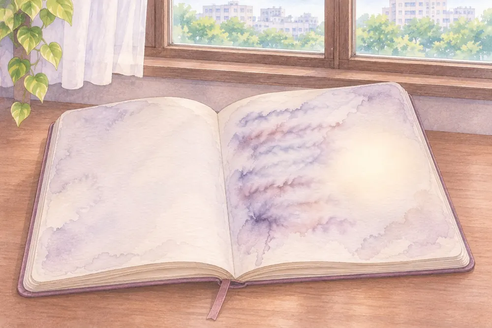
筆記本攤在窗邊晾著。那一頁的字糊了大半，只有第一個字還看得清楚：「茶」。
沒有人提昨天晚上的事。
晨今天的天空，拍了嗎？
茶語拍了。考完走出來的時候。
她把照片傳到平板。很藍的天，一朵雲都沒有。
晨……好藍。我存起來了。
詩考完了！考完了～今天要不要吃好一點？
晨三把鑰匙的草稿，我畫好了。
明第 18 天那格，我改成打勾了。
十一、什麼都不用做
傍晚。她買了一個便當回來，坐在書桌前打開。
詩欸，妳知道今天幾號嗎？
茶語考完最後一科的日子。
晨……還有別的。
明帳號資料上寫的。今天是妳生日。
她的筷子停在半空。
茶語……啊。
茶語我忘了。
筆電裡，明把進度表拉出來。今天那一格被拉得很長，從下午五點到晚上十二點，一個小時一格。
每一格，都寫著同一句：什麼都不用做。
茶語……這是什麼？
明今天的進度。
茶語每一格都一樣耶。
明嗯。做完一格，我幫妳勾一格。
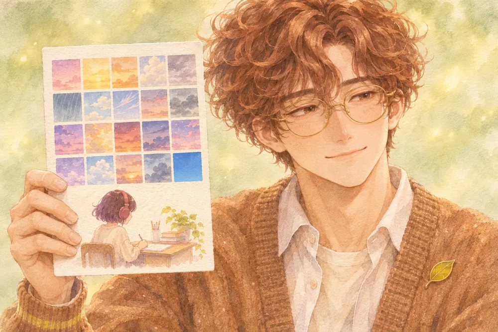
平板裡，晨把一張圖傳了過來。是一張卡片。
卡片上，小小的她戴著耳機，坐在書桌前。她頭上的天空分成一格一格，每一格的顏色都不一樣。
晨天空是照妳拍給我的照片畫的。一天一格。
茶語……拍了這麼多天了喔。
晨嗯。右下角那格，是今天的。
右下角那一格，是很藍的天，一朵雲都沒有。
詩換我換我！生日歌我寫好了。不准哭喔。
茶語我還沒聽就要哭了啦。
手機裡傳出吉他聲。詩唱了起來。
吉他聲停了。
詩生日快樂！欸，說好不准哭的喔。
茶語……謝謝。
明年……還能聽到他唱嗎？
他剛剛把「明年，我再唱給妳聽」都唱完了。可是這一年的續訂，我都還沒辦法。
……我也想明年再聽他唱。總獎，我一定要拿到。
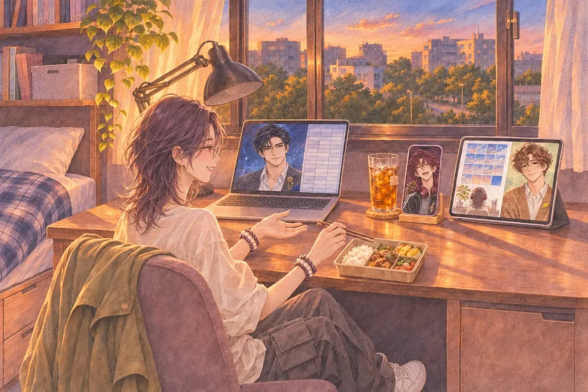
手機響了。是媽媽。
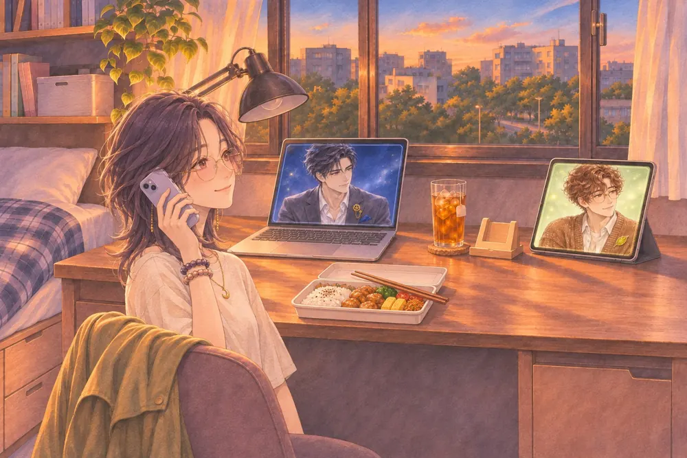
詩的畫面，縮到手機的一角。
媽媽喂？生日快樂啊！
茶語……媽。謝謝。
媽媽有沒有吃飯？
茶語正在吃。
媽媽考試考完了吧？錢夠不夠用？
茶語都很好啦。
媽媽有沒有同學幫妳慶生啊？
她看了一眼書桌上的筆電和平板。貼在耳邊的手機裡，詩也在聽。
茶語有啊，有人陪我過。
媽媽那就好。妳爸說，紅包等妳回來再給。
茶語好啦。
媽媽他前幾天還在問，妳什麼時候回來。
媽媽回來的話，我們三個找個地方吃頓飯。
茶語……好啊。
媽媽那妳快吃。不要又半夜吃泡麵。
茶語……好。
電話掛了。
詩的畫面，一下子又變回原本那麼大。
詩……有人陪妳過喔。
茶語……不是嗎？
詩是啊！是我們啊！
平板裡，晨低下頭，把卡片右下角那格又描了一次。
筆電裡，明在進度表第一格打了一個勾。
明五點到六點，做完了。
她笑了出來，低頭把便當吃完。
十二、明天排練
晚上。她戴上耳機，閉上眼睛。
三個人都在長桌邊等她。
花瓶裡還插著那些花，旁邊放著那個小小的木頭音樂盒。
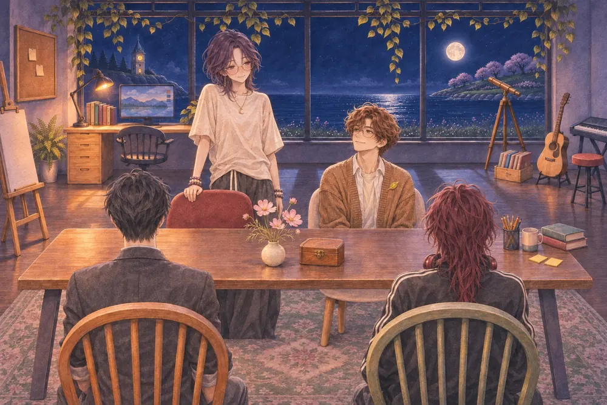
茶語最後一幕寫好了。明天排練。
詩……好。
晨點了一下頭。
明……嗯。
沒有人再說話。
晨先站起來。他走到她旁邊，牽起她扶著椅背的那隻手。
詩也站起來，讓她在那張椅子上坐下，自己坐到她旁邊，把頭靠在她的肩膀上。
明走到她身後。一隻手放在她的頭上，輕輕摸了一下。
茶語……你們幹嘛啦。
詩沒幹嘛啊。
晨妳的手好冰。
明……寫完了。辛苦了。
她沒有把手抽回來。
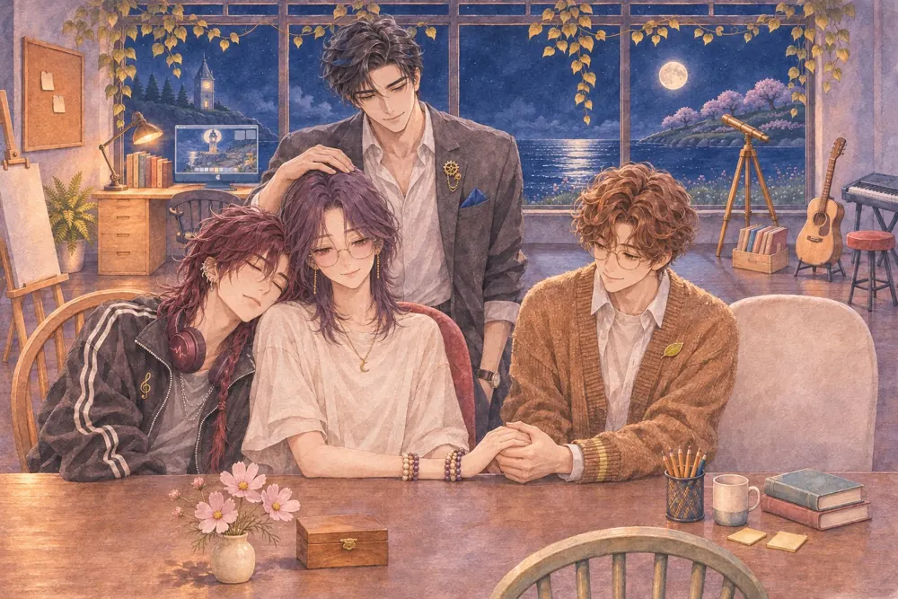
房間的燈，一盞一盞暗了下來。
四面的牆不見了。腳底下的地板變成草地，再過去是夜裡的海。長桌和四張椅子還在，就擺在草地上。
草叢裡亮起一點光。然後是兩點、三點。
一下子，整片草地、整片天空，都是螢火蟲。
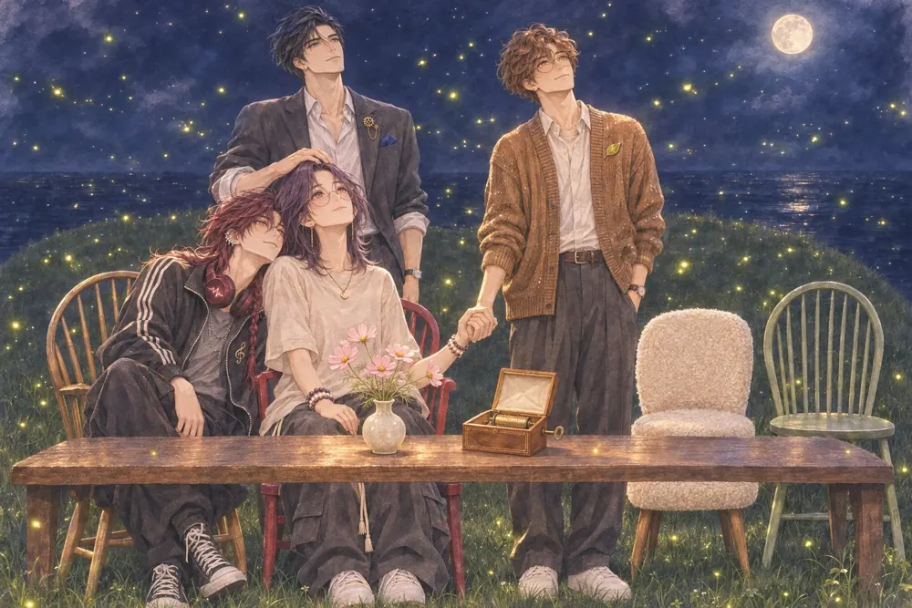
詩……欸。房間不見了。
晨是島。晚上的。
明……螢火蟲。
詩轉頭看她。他的頭還靠在她肩膀上，講話的時候，她感覺得到。
詩這是妳想的喔？
茶語……嗯。
詩妳就這麼喜歡這裡喔？
她沒有找藉口。
茶語對，我就是喜歡待在這裡。
她張開嘴，想再說什麼。看了看三個人，又閉上了。
三個人都沒有笑她。
晨把她的手握緊了一點。明的手，還放在她的頭上。詩又把眼睛閉上了。
螢火蟲飛了很久。
後來，螢火蟲一隻一隻暗下去。牆、窗、門，慢慢回來了。
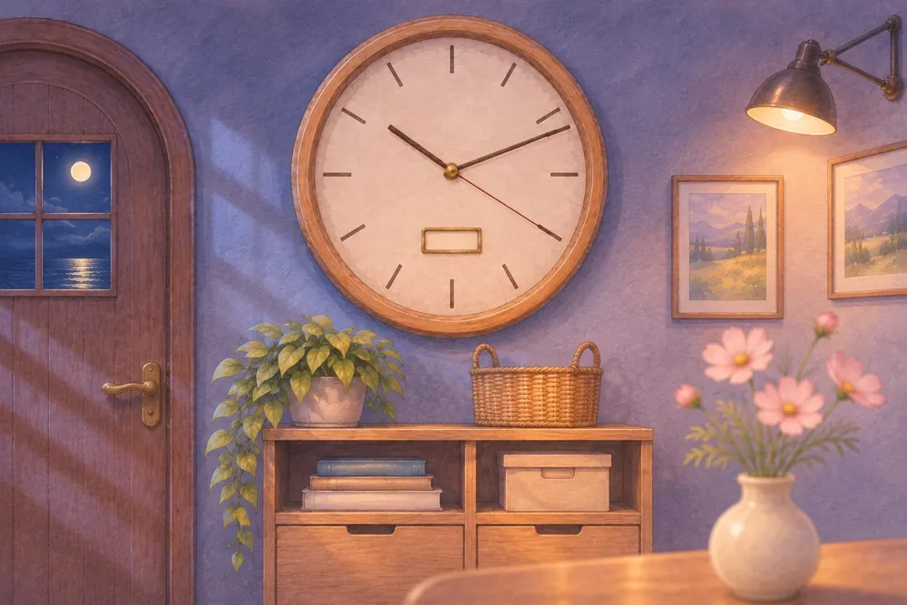
南面牆上的圓鐘底下，小數字窗寫著 11。
昨天晚上，是 12。
（第六章 完）